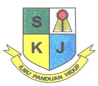
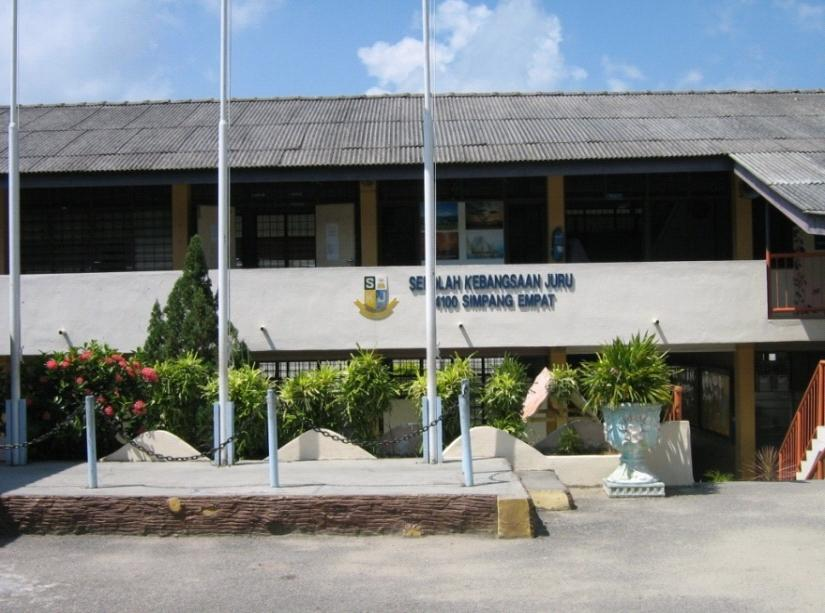
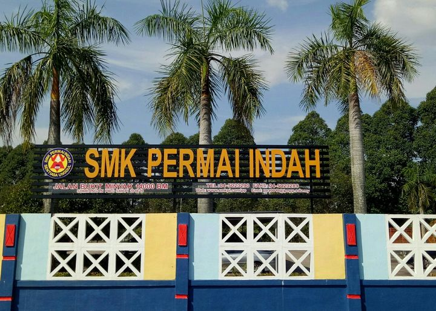
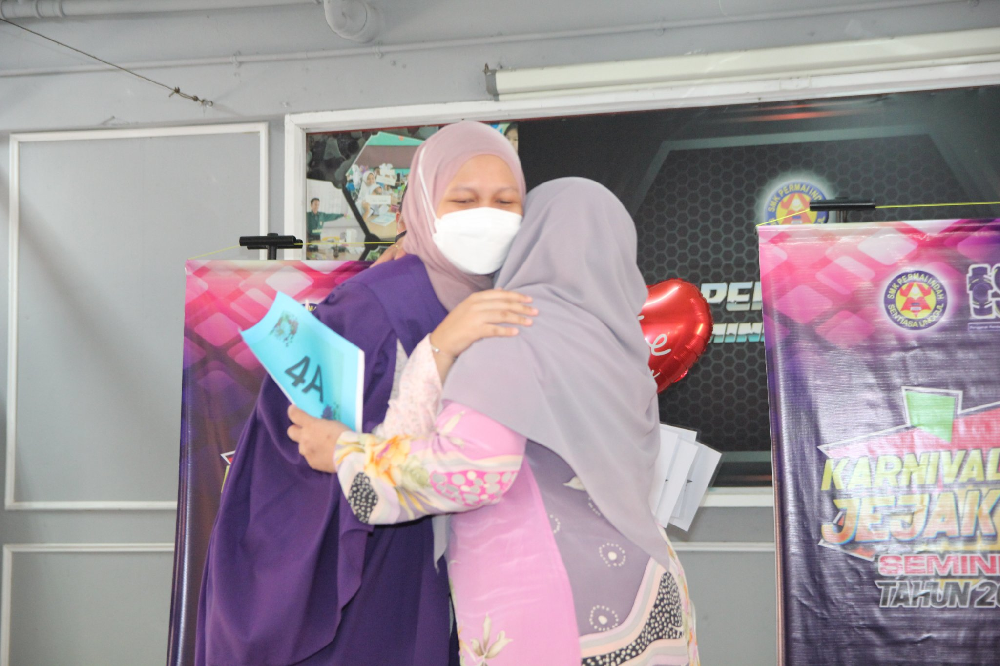
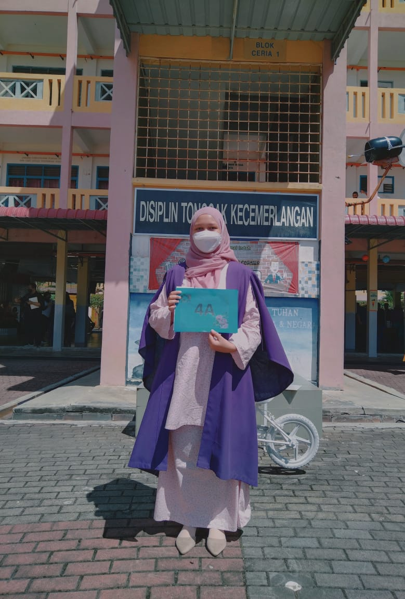
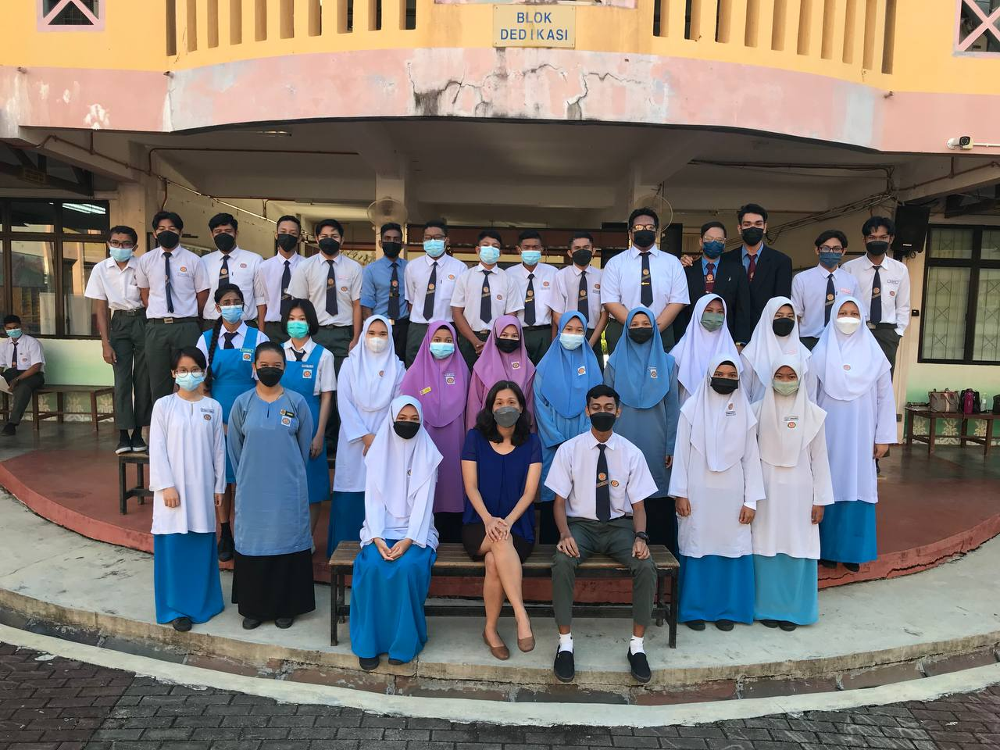
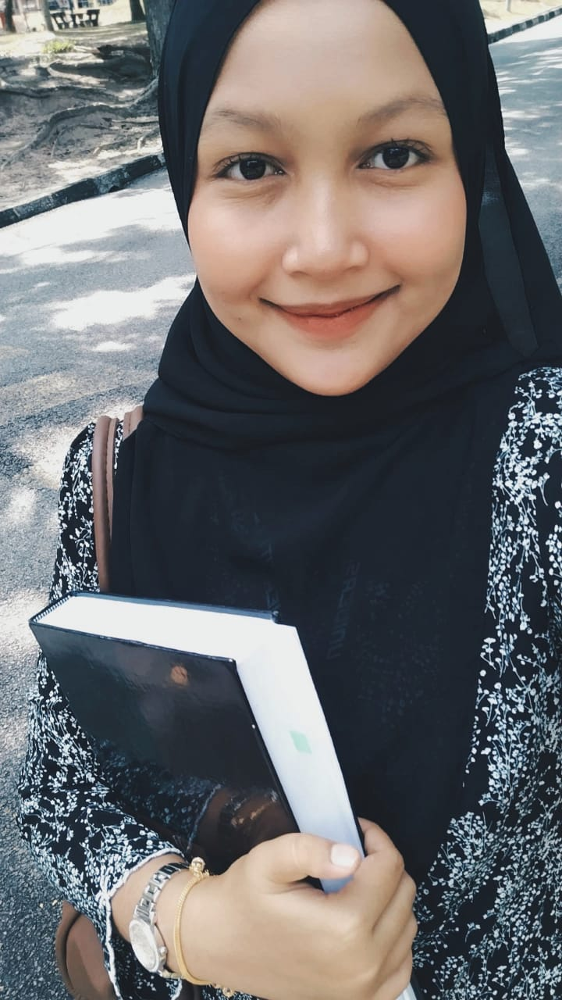
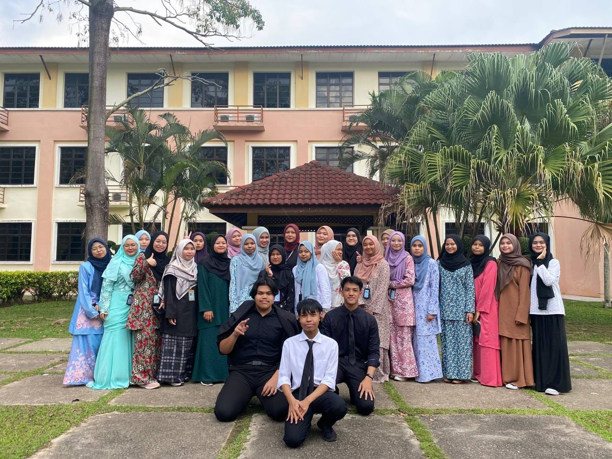
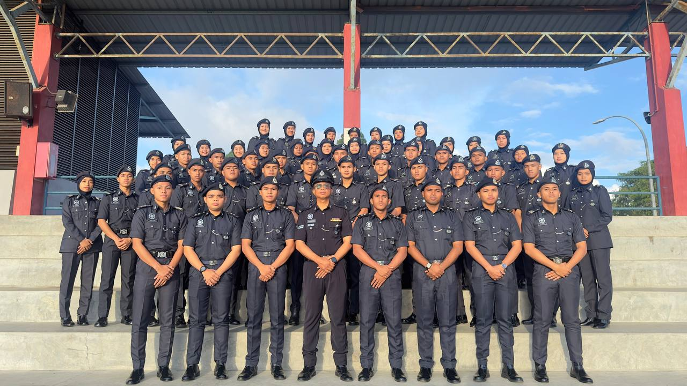
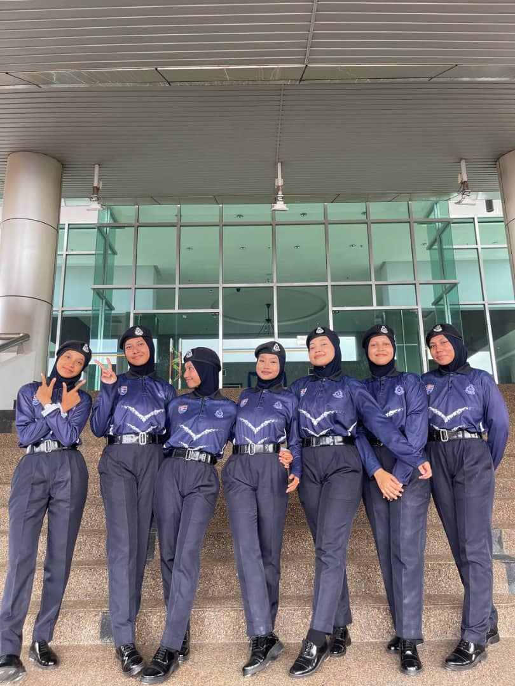

SEKOLAH KEBANGSAAN JURU, BUKIT MERTAJAM PULAU PINANG
In 2015, I transferred to Sekolah Kebangsaan Juru during Year 5. This school became a significant part of my journey, where I adapted to a new environment and made wonderful friends. The school logo represents the institution's commitment to nurturing well-rounded students, while the photo of the school building reflects its welcoming atmosphere.


SMK PERMAI INDAH, BUKIT MERTAJAM PULAU PINANG
I started my secondary school journey at SMK Permai Indah in Form 1 and continued until Form 5. This school holds a special place in my heart, as it was where I grew academically and personally. I achieved 4A in my SPM and was recognized as one of the top-performing students. One of the photos shows me receiving this honor on stage, where I embraced my principal after the announcement.
Another photo features my classmates and our Form 5 teacher. I was in the 5 Perniagaan class, where we shared many memorable moments, from academic discussions to group activities that strengthened our bond. SMK Permai Indah was a platform where I discovered my potential and cultivated lifelong friendships.




UNIVERSITI TEKNOLOGI MARA KEDAH CAWANGAN KAMPUS SUNGAI PETANI
Studying at UiTM Kedah for my Diploma in Information Management has been an exciting chapter of my life. The first photo shows the beautiful campus that inspires learning and personal growth. Another photo captures a close-up moment with my friends, who have been an integral part of my university experience. Group projects and academic events, as shown in one of the pictures, reflect the collaborative and dynamic environment at UiTM.
In the last photo, I am proudly participating in SUKSIS, a co-curricular program under PDRM. Joining SUKSIS has made my diploma experience exciting and dynamic.
Through SUKSIS, I have participated in various activities that challenged me physically and mentally, ensuring my time in university was never dull. SUKSIS has prepared me to be commissioned as an Inspector of SUKSIS, a prestigious and rewarding opportunity.




